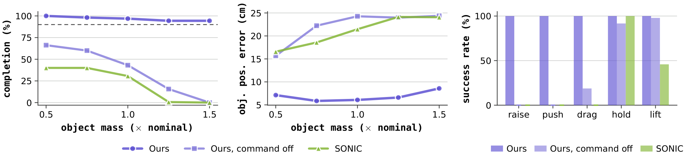
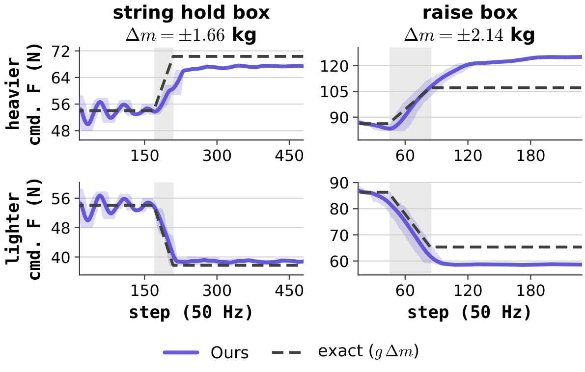
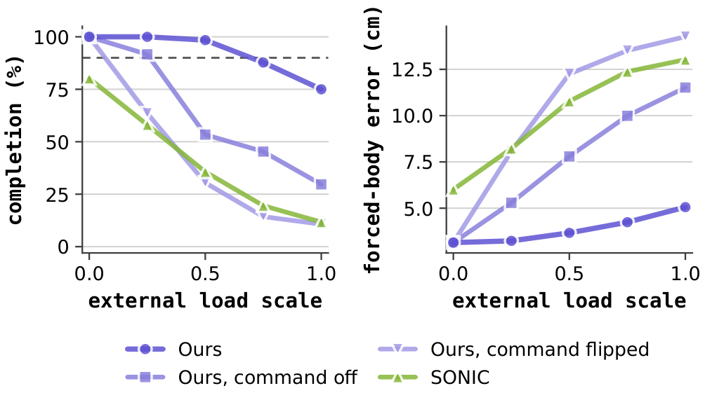
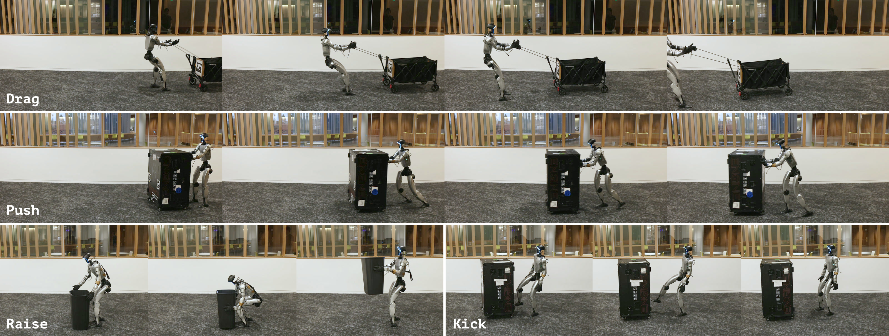

ICRA 2027 · Unitree G1
Ctrl+F
Force as an Interface for
Humanoid Loco-Manipulation
A motion tracker knows where the body should be. Ctrl-F adds how hard to act on the world: a 3-D force command at each hand or foot.
Abstract
Motion trackers know where the body should be, not how hard it should act. Ctrl-F adds an explicit force command, a 3-D force at each hand or foot: a low-level motion–force tracker trained without objects, and a high-level force planner that chooses the force online from object state.
On a Unitree G1 it drags, pushes, raises and kicks loads up to 20 kg where a force-blind tracker moves nothing, and keeps going when weight is added mid-task.
Full abstract
Humanoid motion tracking has scaled to general policies that reproduce diverse human motion, but the resulting behavior is in free space: the tracker knows where the body should be, not how it should interact with the environment. Other work makes the object part of the objective, yet abstracts that interaction to contact or geometry, which leaves the demanding cases under-explored. We argue that force is the natural command channel missing between motion imitation and object interaction, the signal that says not just where to make contact, but how hard.
We present Ctrl-F, a hierarchical motion–force framework that augments motion tracking with an explicit force command, a 3-D force at each designated contact body such as a hand or a foot. A unified motion–force controller tracks the reference motion while applying the commanded force to the world, and a high-level force planner issues that command online from object state and proprioception.
In simulation and on hardware, Ctrl-F completes loco-manipulation that demands large, sustained interaction force and adjusts its command online as the load changes, both out of reach of a force-blind tracker. On hardware it drags, pushes and raises with the hands and kicks with a foot, reaching 20 kg on the pushed and the kicked box where the baseline moves nothing loaded, and it keeps dragging when weight is added mid-task.
A pose cannot say how hard
Same tracker, same box. Empty, it lifts. With 2 kg inside, the hands slide and the box stays on the floor.
Baseline: SONIC, a general motion tracker with public G1 weights and no force channel.
Two stages, one force command
Inverse-force training
No object in training. Sample a force command and apply the opposite wrench to the body. Holding the reference under it means exerting exactly the commanded force.
High-level force planner
Reads object state and proprioception, outputs one 3-D force per contact body. Supervised by an analytical force model, refined by RL scored on the object.
No force sensor, no mass input
Frozen tracker plus learned planner, object pose from AprilTags. The force still adapts, from how the object moves.
What the tracker learned
A wrench alone drags the hand off its reference. Add the matching command and it recovers. Command alone, it moves the other way. The channel is read, not ignored.
Simulation
Nine tasks in three families, one low-level and one high-level policy per family. Object mass is randomized and changes inside episodes.



Hardware
Unitree G1, onboard sensing, AprilTag object pose. Same clips, objects and robot for both. Load tags are the weight added.
Drag crate wheels locked
The baseline moves only the empty crate. Ctrl-F moves all three.
Push box
SONIC moves neither. Ctrl-F pushes both.
Raise box load 2 kg
The baseline's hands slide past. Ctrl-F squeezes: 9 of 10 trials.
Sweep load 1 kg
The baseline never moves the box.
Stand kick a foot is a force body too
SONIC cannot balance on one leg. Ctrl-F kicks both.

Load changes mid-task
Weight is added while the robot is already pulling. On one arm the planner\'s command is frozen.
Drag crate, load added wheels locked throughout
The two Ctrl-F arms differ only in whether the command may change. The adaptation is the planner's, with no force sensor in the loop.
Hold on a rope, 1 + 1 kg
Same network. Command at zero, the hand sinks. With the planner, it holds.
Supplementary video
2 min 35 s, with narration.
Citation
@inproceedings{ctrlf2027,
title = {Ctrl-F: Force as an Interface for Humanoid Loco-Manipulation},
author = {Anonymous},
booktitle = {IEEE International Conference on Robotics and Automation (ICRA)},
year = {2027}
}Built on mjlab and MuJoCo Warp. Baseline: SONIC.